Areas
10.
A, B and C is an isosceles triangle with AB = 12 cm and angle ABC = 60°.
(a) Find the length of BC.

......................... cm [3]
(b) Calculate the area of the triangle.
......................... cm2 [2]
(c) C is due West of B.
Find the bearing of C from A.
Find the bearing of C from A.
......................... [2]
(d) Triangle ABC is a face of a square-based pyramid ABCDE.
(i) Find the height of the pyramid correct to 2 decimal places.

......................... cm [4]
(ii) Calculate the total surface area of the pyramid.
......................... cm2 [3]
Paper 4
11.
The diagram shows a cross section of a machine. QR = UV.
(a) Show that QR = 40 cm.

......................... [2]
(b) Find the perimeter of the cross section.
......................... cm [2]
(c) (i) Calculate the area of the cross section.
......................... cm2 [2]
(ii) This machine is in the form of a prism, 200 cm long.
Find the volume of the machine.
Find the volume of the machine.
......................... cm3 [2]
Paper 4
12.
The prism is completely filled with some material.
1 cubic metre of this material has mass 2 kg.
Calculate the mass of the material used.
1 cubic metre of this material has mass 2 kg.
Calculate the mass of the material used.
......................... kg [2]
Paper 4
13.
The diagram shows a circle of radius 4 cm, inscribed in an equilateral triangle ABC.
AB, BC and AC are tangent to the circle at P, T and M respectively, and AB = 14 cm.
(a) State the value of:
(i) The sector angle MOP,
AB, BC and AC are tangent to the circle at P, T and M respectively, and AB = 14 cm.

(i) The sector angle MOP,
......................... [1]
(ii) The length BP.
......................... cm [1]
(b) Calculate:
(i) The height of the triangle ABC,
(i) The height of the triangle ABC,
......................... cm [2]
(ii) The area of the shaded region.
......................... cm2 [2]
Paper 4
14.
The diagram shows the positions of two houses at P and Q. The point R represents the position of the electrical pole which is 40 m from P and 50 m from Q.
Angle PRQ = 108°.
(a) Calculate PQ, the distance between the two houses.
Angle PRQ = 108°.

......................... m [4]
(b) Calculate the area of triangle PQR.
......................... m2 [2]
(c) Q is due East of P.
Calculate the bearing of R from P.
Calculate the bearing of R from P.
......................... [4]
(d) Another house is constructed along PQ such that it is at the shortest distance from R.
Calculate this shortest distance.
Calculate this shortest distance.
......................... m [2]
Paper 4
15.
(a) The diagram shows triangle OPQ.
Angle OPQ = 90°, OP = 4.5 cm and PQ = 4.8 cm.
(i) Calculate OQ.
Angle OPQ = 90°, OP = 4.5 cm and PQ = 4.8 cm.

......................... cm [2]
(ii) Calculate the gradient of line OQ.
Give your answer correct to 2 significant figures.
Give your answer correct to 2 significant figures.
......................... [3]
(iii) OP and PQ are measured correct to 2 significant figures.
Calculate the greatest possible area of triangle OPQ.
Calculate the greatest possible area of triangle OPQ.
......................... cm3 [3]
(b) In the diagram, XZ has length 63 cm and YC is a vertical line of length 16 cm.
Points X, Z and C lie on a horizontal plane.
The angle of elevation of Y from Z is 25° and θ° respectively.
Angle CXZ = 30°.
(i) Calculate the length of XC.
Give your answer correct to 4 significant figures.
Points X, Z and C lie on a horizontal plane.
The angle of elevation of Y from Z is 25° and θ° respectively.
Angle CXZ = 30°.

Give your answer correct to 4 significant figures.
......................... cm [2]
(ii) Show that the length of ZC = 37.4 cm correct to 3 significant figures.
......................... [4]
(iii) Find the value of θ.
......................... [2]
(iv) Calculate the area of triangle XZC.
......................... cm2 [3]
(v) Find the shortest distance from C to XZ.
......................... cm [2]
Paper 4